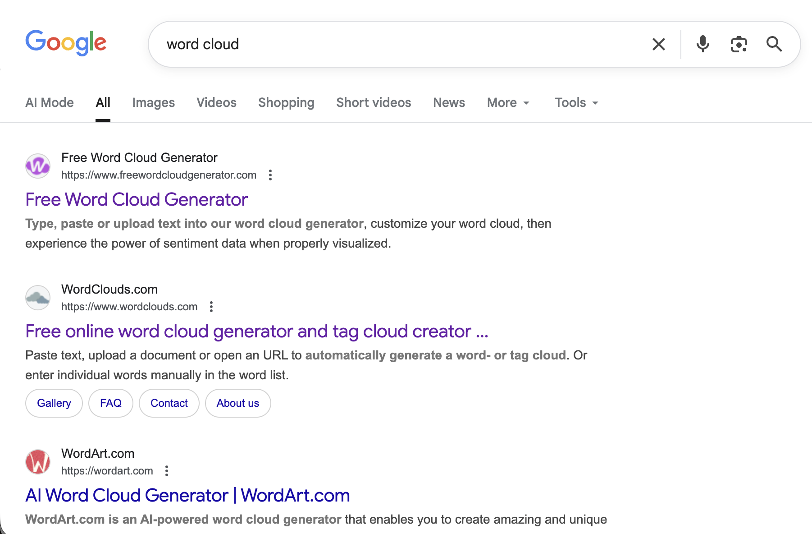
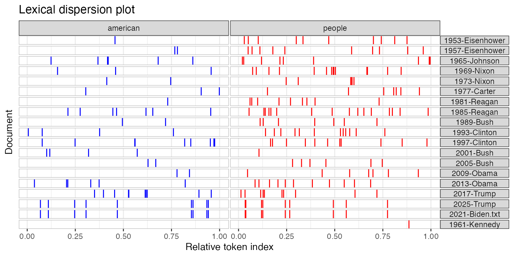
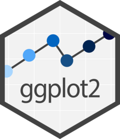
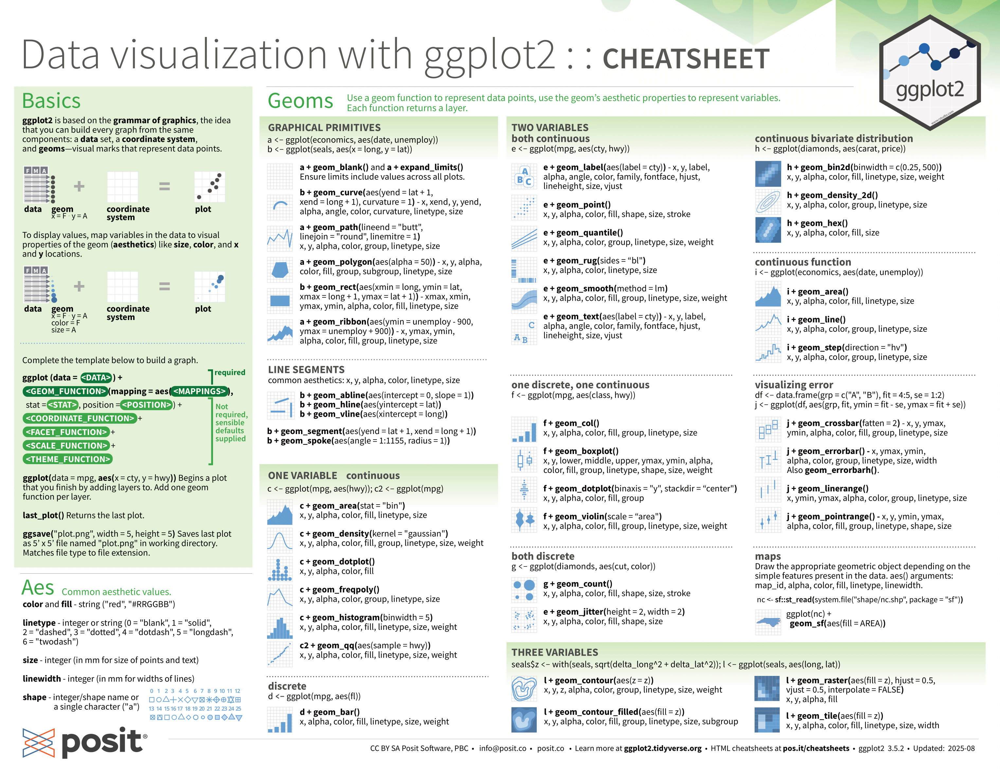
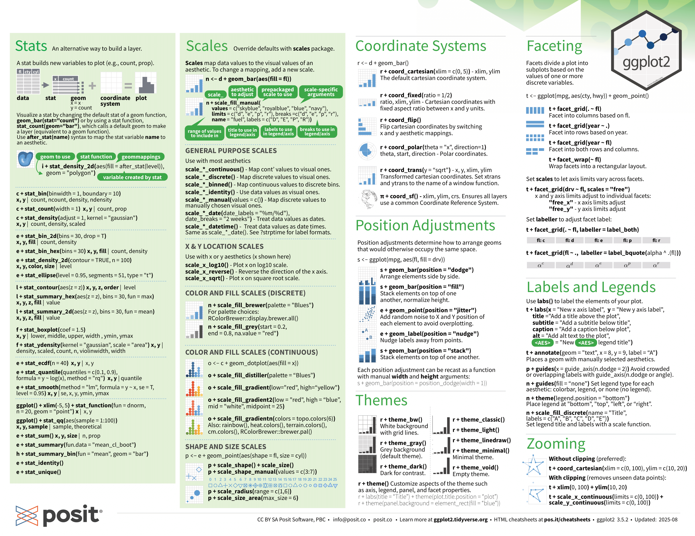

Week 13: Data visualization
CHU0387 | National Taiwan Normal University
🎯 Goals
- Week 12: Analyzed the cleaned ETtoday corpus using KWIC and frequency tables.
- Week 13: Learn how to create clear, impactful figures of the data that we analyzed!
1. Creating figures of the results, why?
Visual presentation of the results
We scraped, cleaned, and analyzed our data—and we already have tables. Why add figures?
Think about it
When you read a website, a journal article, or scroll through social media, do you read long, complete texts first—or are you drawn to headlines and pictures before turning to the text?
✅ A great figure
Stimulates the human visual system and summarizes the results so the audience grasps the core message at one glance.
❌ A messy figure
Packs in too much information or uses an inappropriate format, blurring the message and hurting the presentation.
Two main figures for this tutorial
Figure Type 1 ☁️ Word Clouds
- Words are arranged in a cloud where word size = relative frequency in the corpus.
- Pros: Minimalist design, intuitive, and strong immediate visual impact!

Figure Type 2 📊 Frequency Dot Plots
- Plots words along a ranked frequency axis.
- Pros: Less playful than word clouds, but much more accurate and allows you to display multiple types of information at once!

Going further: Lexical dispersion plots
What if you want to compare keywords across texts or time?
Two common uses:
- Compare the frequency of two keywords within a single document.
- Compare one or more keywords across time and/or between documents.

🤔 “And so what?” A figure is never the final step! Our role is to interpret the visual patterns according to our research question.
2. Let’s do the work with R
How are we going to work in this class?
Please download the R Markdown script and the three datasets from Weeks 11 & 12:
| Markdown script for this week | Datasets to use in the script |
|---|---|
| 📥 Download Markdown script | 📦 Whole ETtoday corpus (after cleaning) |
| 📄 PDF output of the script | 🔍 KWIC analysis of you ‘to have’ |
| 📊 Most frequently used words (Top 100) |
Two key packages: quanteda.textplots & ggplot2
Package 1 quanteda.textplots
- Sub-library of
quantedadedicated to visualizing text data. - Used today to generate word clouds directly from Document-Feature Matrices (
dfm).
Package 2 ggplot2 (website)
- The gold standard in R for publication-ready figures (theses, journal articles, industry reports).
- Used today to build clean, ranked frequency dot plots.

ggplot2 Cheatsheets


Workflow for word clouds & frequency dot plots
3. Explanation of the R code
Step 0: Prepare the environment
1. Load required libraries:
🀄 Crucial for Chinese text: Without showtext and showtext_auto(), R plots often display empty boxes (□□) instead of Chinese characters!
Part A: Visualizing KWIC (有) — Post-context Word Cloud
We first convert kwic_data$post into a dfm and filter noise with dfm_trim():
📉 min_termfreq = 100 (The Floor)
Removes rare words (< 100 occurrences) such as typos, rare names, or irrelevant noise.
📈 max_termfreq = 10000 (The Ceiling)
Removes super-frequent function words (> 10,000 occurrences) like "的" (de), which otherwise dwarf content words!
kwic_post_freq <- dfm(tokens(kwic_data$post,
remove_punct = TRUE, remove_numbers = TRUE, remove_separators = TRUE))
# Version 1: Keep high-frequency words (only trims rare words < 100)
kwic_post_freq_trim_WithDE <- dfm_trim(kwic_post_freq, min_termfreq = 100, verbose = TRUE)
# Version 2: Remove super-frequent words like '的' (trims > 10,000)
kwic_post_freq_trim_WithoutDE <- dfm_trim(kwic_post_freq, min_termfreq = 100, max_termfreq = 10000, verbose = TRUE)Plotting the two KWIC Word Clouds
Compare the cloud with "的" versus without "的":
# Cloud 1: With '的' (raw reality)
textplot_wordcloud(kwic_post_freq_trim_WithDE,
max_words = 100, min_size = 1, max_size = 5,
rotation = FALSE, random_order = FALSE,
color = c('red', 'green', 'blue', "orange"))
# Cloud 2: Without '的' (meaningful content words)
textplot_wordcloud(kwic_post_freq_trim_WithoutDE,
max_words = 100, min_size = 1, max_size = 5,
rotation = FALSE, random_order = FALSE,
color = c('red', 'green', 'blue', "orange"))KWIC Post-context: Frequency Dot Plots (ggplot2)
Dot plots give us an exact ranking of words in the post context:
Two key ggplot2 tricks:
reorder(feature, frequency): Orders words on the y-axis by frequency instead of alphabetical order!scale_x_continuous(labels = label_comma()): Formats axis numbers as"1,000"instead of"1000".
kwic_data_freq_PostContext <- dfm(
tokens(kwic_data$post,
remove_punct = TRUE,
remove_numbers = TRUE,
remove_symbols = TRUE)
)
kwic_data_freq_PostContext <- textstat_frequency(kwic_data_freq_PostContext)
# Top 30 words (much easier to read than Top 100!)
ggplot(head(kwic_data_freq_PostContext, 30),
aes(x = frequency,
y = reorder(feature, frequency))) +
geom_point() +
labs(x = "Frequency", y = "Word") +
scale_x_continuous(labels = label_comma())Zooming in: First Word After "有" (Word Cloud)
A 30-word window is wide. Let’s zoom in on only the 1st word immediately following "有" using word(kwic_data$post, 1):
## 1. Extract the 1st word after "有"
kwic_data$post_first_word <- word(kwic_data$post, 1)
## 2. Convert to DFM and trim
kwic_post_FirstWord_freq <- dfm(
tokens(kwic_data$post_first_word,
remove_punct = TRUE,
remove_numbers = TRUE,
remove_separators = TRUE))
kwic_postFirstWord_freq_trim <- dfm_trim(kwic_post_FirstWord_freq, verbose = TRUE)
## 3. Plot the word cloud
textplot_wordcloud(kwic_postFirstWord_freq_trim,
max_words = 100, min_size = 1, max_size = 5,
rotation = FALSE, random_order = FALSE,
color = c('red', 'green', 'blue', "orange", "cyan"))Zooming in: First Word After "有" (Dot Plots)
Plotting the top 30 first words with ggplot2 reveals the most common direct objects or verbs following "有":
## Compute frequencies of the 1st word after "有"
kwic_data_freq_PostFirstWord <- dfm(
tokens(kwic_data$post_first_word,
remove_punct = TRUE,
remove_numbers = TRUE,
remove_symbols = TRUE)
)
kwic_data_freq_PostFirstWord <- textstat_frequency(kwic_data_freq_PostFirstWord)
## Plot Top 30 first words
ggplot(head(kwic_data_freq_PostFirstWord, 30),
aes(x = frequency,
y = reorder(feature, frequency))) +
geom_point() +
labs(x = "Frequency", y = "Word") +
scale_x_continuous(labels = label_comma())Part B: Whole Corpus Frequency — Word Clouds
Now we visualize Article_total2$body across the entire corpus. Because the corpus is huge, we raise the dfm_trim() thresholds:
Adjusted whole-corpus thresholds:
min_termfreq = 10000: Keep only words occurring at least 10,000 times.max_termfreq = 300000: Remove"的"(> 300,000 occurrences) so actual news topics stand out!
Article_tokens_frequency <- dfm(
tokens(Article_total2$body,
remove_punct = TRUE, remove_numbers = TRUE, remove_separators = TRUE))
# With '的'
Article_tokens_frequency_trim_WithDE <- dfm_trim(
Article_tokens_frequency, min_termfreq = 10000, verbose = TRUE)
# Without '的' (max_termfreq = 300000)
Article_tokens_frequency_trim_WithoutDE <- dfm_trim(
Article_tokens_frequency, min_termfreq = 10000, max_termfreq = 300000, verbose = TRUE)
textplot_wordcloud(Article_tokens_frequency_trim_WithoutDE,
max_words = 100, min_size = 1, max_size = 5,
rotation = FALSE, random_order = FALSE,
color = c('red', 'green', 'blue', "orange"))Whole Corpus Frequency — Dot Plots (ggplot2)
Using table_FreqWord_Top100 from Week 12, compare Top 100 vs. Top 30:
# Plot 1: All Top 100 words (crowded y-axis!)
ggplot(table_FreqWord_Top100,
aes(x = frequency,
y = reorder(feature, frequency))) +
geom_point() +
labs(x = "Frequency", y = "Word") +
scale_x_continuous(labels = label_comma())
# Plot 2: Top 30 words using head(..., 30) -> much cleaner for an audience!
ggplot(head(table_FreqWord_Top100, 30),
aes(x = frequency,
y = reorder(feature, frequency))) +
geom_point() +
labs(x = "Frequency", y = "Word") +
scale_x_continuous(labels = label_comma())💡 Takeaway: Showing less data (head(..., 30) instead of 100) often makes your chart much more readable and persuasive for your audience!